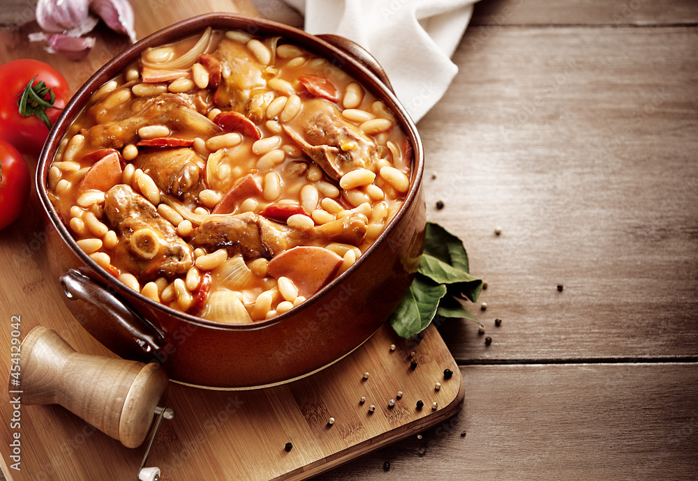

Chicken Cassoulet
History
Chicken cassoulet comes from the French dish cassoulet. It was invented in 1355 in France. The story goes that the people in the city of
Castelnaudary made a meal out of all of the food they had so that the soliders fighting in the war could continue fighting. My mom made chicken cassoulet a lot when I was little,
and she still makes it on special occasions. She makes a little differently than how it is traditionally, but it is one of my favorite family meals.
Ingredients
- 4 chicken drumsticks
- Salt
- Pepper
- 2 dried bay leaves
- Fresh basil, leaves and stalks
- 1 bulb of garlic, split into cloves
- 1 red chili, chopped
- Olive oil
- Red and yellow cherry tomatoes
- One cup of cannellini beans
- One cup of new potatoes

Instructions
- Preheat oven to 350 degrees fahrenheit.
- Season the chicken with the salt and pepper and put them in a pan.
- Put the bay leaves, basil leaves, and stalks in the pan, along with the tomatoes, cannellini beans, and new potatoes.
- Spread the garlic cloves and chili throughout the pan.
- Stir the pan, making it so the tomatoes go underneath everything else.
- Put the pan in the oven for 90 minutes, but flip the tomatoes over halfway through.
- Take the pan out of the oven, and squeeze the garlic out of the skin.
- Done!
References